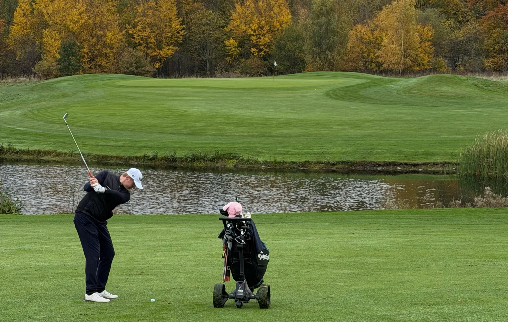
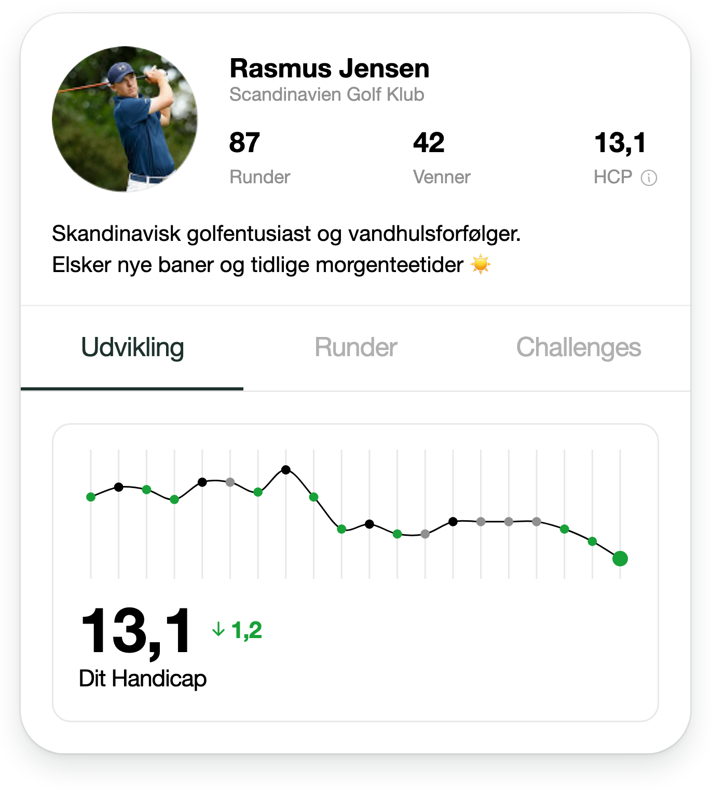
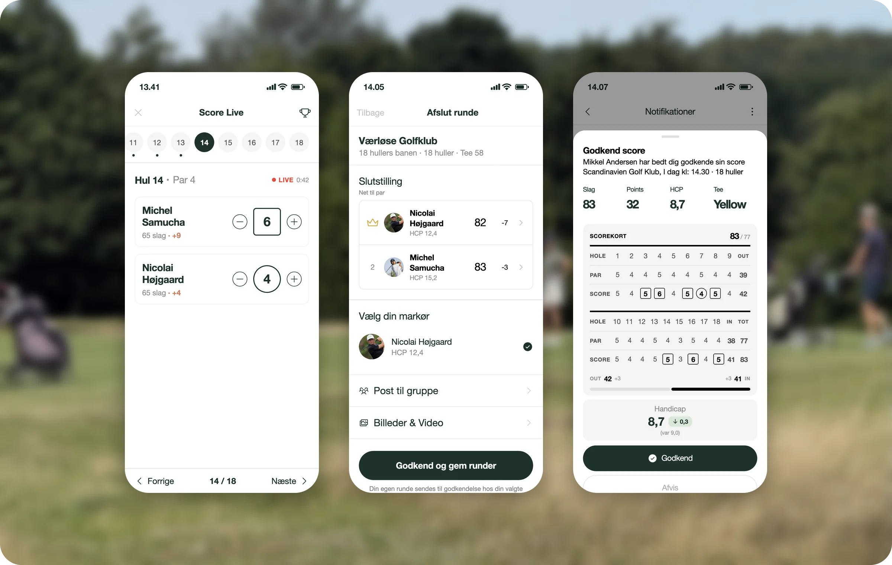

Det korte svar er at det afhænger af, hvor længe du har spillet, hvor meget du øver, og hvad du sammenligner med. Men der findes nogle gode pejlemærker. Det vigtigste at have med fra start: jo lavere dit handicap er, desto stærkere spiller er du.

Hurtig genopfriskning: hvad handicap egentlig er
Dit golfhandicap er et tal, der beskriver dit spillemæssige niveau. Det bygger på dine seneste runder og fortæller, hvor mange slag over banens sværhedsgrad du typisk lægger. Den vigtigste pointe er enkel: et lavt index betyder en stærkere spiller, og et højere index betyder, at der er mere at arbejde med. Et handicap på 8 er altså bedre end et handicap på 20.
Fordi handicappet udjævner forskellene mellem spillere, kan du tage en runde mod nogen, der er meget bedre eller dårligere end dig, og stadig få en jævnbyrdig dyst. Det er en stor del af, hvorfor golf er så socialt.
Er du i tvivl om hvordan selve tallet beregnes, så har vi en enkel forklaring af hvordan WHS-handicappet fungerer.

Hvad regnes typisk som et godt handicap?
Der findes ikke ét rigtigt tal, men nogle niveauer går igen, når golfere taler om, hvad der er godt. Brug dem som pejlemærker, ikke som en facitliste.
Pejlemærker, groft sagt
- Scratch (omkring 0): meget dygtigt og typisk forbeholdt spillere, der øver målrettet og spiller ofte.
- Single-digit (under 10): regnes bredt som stærkt og er for mange et håndgribeligt langsigtet mål.
- Lavt to-cifret (omkring 10 til 18): et solidt, fornuftigt niveau, hvor mange engagerede fritidsspillere ligger.
- Højere handicap (over 18): ofte hvor man er tidligt i golflivet, og hvor der typisk er mest at hente ved at spille lidt mere.
Mange fritidsspillere ligger højere end single-digit, og det er helt normalt. Pointen med pejlemærkerne er ikke at sætte dig i bås, men at give dig en fornemmelse af, hvor du står, og hvad der ligger forude.
«Godt» er relativt
Et godt handicap for en nybegynder ser anderledes ud end et godt handicap for en, der har spillet i ti år. For nybegynderen kan det at komme stabilt under et bestemt tal være en stor sejr. For den erfarne spiller kan de sidste par slag ned mod single-digit være det sværeste arbejde af det hele.
Derfor er det bedste mål sjældent en andens tal. Det er din egen fremgang over tid. Hvis dit handicap bevæger sig den rigtige vej, spiller du godt golf, uanset hvor du startede.
Det bedste handicap at jagte er ikke en andens. Det er det, der er en smule lavere end dit eget i sidste måned.
Sådan arbejder du dig nedad
Der er ingen genvej, men opskriften er enkel: spil mere, registrér dine runder, og hold øje med din udvikling. Jo flere runder du fører ind, desto mere retvisende bliver dit handicap, og desto tydeligere ser du, hvor slagene forsvinder. De fleste spillere finder hurtigt ud af, at de taber flest slag omkring greenen, ikke ude på driving rangen.
Vi har skrevet to grundige guides der hjælper dig videre herfra: sådan sænker du dit golfhandicap og de tal der faktisk sænker dit handicap.
Hvilken app kan jeg bruge til at registrere runder og følge mit handicap?
Golfsocial er en gratis dansk golf-app, hvor du registrerer dine runder til dit DGU-handicap og følger, hvordan handicappet udvikler sig fra runde til runde. Du fører scoren i appen under runden og vælger en af dine medspillere som markør. Når markøren har godkendt runden, tæller den med i dit handicap hos Dansk Golf Union, så længe I har spillet en HCP-reguleret bane.
Et handicap viser kun din fremgang, hvis runderne bliver ført ind. I appen ligger dine runder samlet, så du kan se, hvilken vej dit handicap bevæger sig. Runderne ligger også i feedet, hvor dine venner kan følge med og kommentere. Golfsocial er gratis at spille med vennerne, og omkring 600 golfere har logget næsten 800 runder i appen.

Kort afrunding
Et godt golfhandicap er først og fremmest et, der bliver lavere, end det var. Single-digit og scratch er fine pejlemærker at have i baghovedet, men de er ikke målestokken for, om du har det sjovt eller spiller godt for dig. Spil dine runder, før dem ind, og lad tallet fortælle historien om din fremgang. Resten kommer af sig selv.
Spørgsmål og svar
Hvad er et godt handicap i golf?
Der findes ikke ét rigtigt tal. Et handicap under 10 regnes bredt som stærkt, og omkring 10 til 18 er et solidt niveau for engagerede fritidsspillere.
Hvad er det bedste handicap i golf?
Jo lavere, jo bedre. Scratch er et handicap omkring 0 og er typisk forbeholdt spillere, der øver målrettet og spiller ofte.
Hvad betyder single-digit handicap?
Et handicap under 10.
Hvad er scratch i golf?
En scratch-spiller har et handicap omkring 0.
Er et højt handicap dårligt?
Nej. Et handicap over 18 er ofte dér, man er tidligt i golflivet. Det vigtigste er, at dit handicap bevæger sig den rigtige vej.
Hvordan får jeg et lavere handicap?
Spil mere, registrér dine runder, og hold øje med din udvikling. De fleste taber flest slag omkring greenen.
Hvilken app kan jeg bruge til at følge mit handicap?
Golfsocial er en gratis dansk golf-app, hvor du registrerer dine runder til dit DGU-handicap og følger, hvordan handicappet udvikler sig fra runde til runde.
Golfsocial-appen
Følg dit handicap, runde for runde
Registrér dine runder til dit DGU-handicap, følg din udvikling, og se vennernes runder i feedet. Gratis at spille med vennerne, på iPhone og Android.